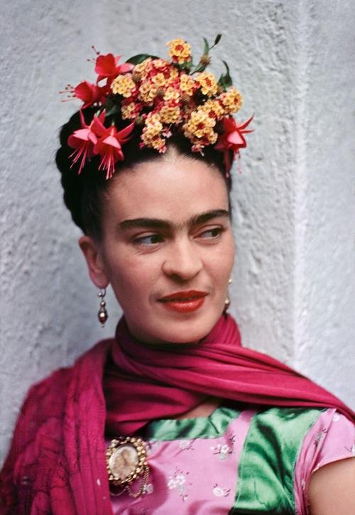
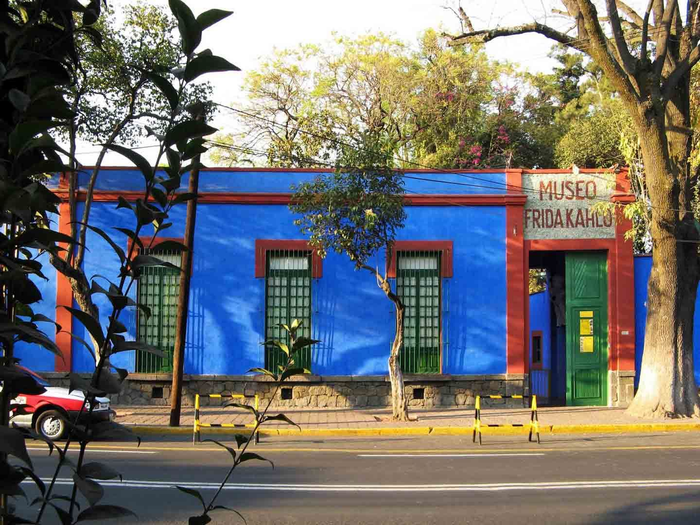

Magdalena Carmen Frida Kahlo Calderón, una de las artistas más icónicas de México, nació el 6 de Julio de 1907 en Coyoacán, Ciudad de México. En la noche del 13 de julio de 1954 falleció en Coyoacán a los 47 años a causa de una trombosis pulmonar.
La vida de Frida estuvo marcada desde muy temprana edad por el sufrimiento físico y las enfermedades que padeció. El primero de estos infortunios consistió en una poliomielitis que contrajo en 1913, dando inicio a una serie de sucesivas enfermedades.
Siendo una joven de 16 años, cuando realizaba estudios en la Escuela Nacional Preparatoria de esta ciudad conoció a Diego Rivera, que estaba pintando su mural La Creación en la escuela.
Resultó fatalmente herida en un accidente de tranvía. En su recuperación, es cuando Frida inicia su pintura. Tres años más tarde presentó a Diego Rivera algunos de sus primeros trabajos y este la animó a continuar pintando. En el 21 de agosto del año 1929 contrajeron matrimonio. Ella tenía 21 años y él 46.
La obra de Rivera influenció su trabajo, dio color a zonas amplias y sencillas en forma intencionadamente ingenua. Deseaba como su marido, que su pintura fuera la evidencia de lo mexicano recurriendo con frecuencia a temas del folklore y del arte popular de su país.
De las 143 pinturas de Frida Kahlo, 55 son autorretratos. Sus cuadros exponen fundamentalmente los aspectos dolorosos de su vida.
Tanto los críticos de la obra de Frida Kahlo como sus biógrafos coinciden en señalar que cualquier intento de separar la vida personal de su obra resulta casi imposible al analizar la temática, la simbología y hasta la técnica de la obra de la artista. Se trata de trabajos de sesgo muy personal y autobiográficos: Frida es sujeto y objeto de su pintura.

La apreciación de su trabajo pictórico se produjo después de su muerte, tardando más de una década en alcanzar verdadero reconocimiento internacional: Tras su muerte en 1954, por largo tiempo se guardó silencio sobre ella y recién a comienzos de la década de 1970 fue redescubierta en el contexto del movimiento de liberación de las mujeres. Desde entonces se han realizado numerosas exposiciones de sus obras y variados homenajes, su fama se ha incrementado permanentemente.
A los cuatro años de su muerte la Casa Azul se convirtió en el Museo Frida Kahlo. Importantes museos y galerías de arte internacionales le han dedicado retrospectivas: el Instituto Nacional de Bellas Artes de Ciudad de México (1977), el Museo de Arte Contemporáneo de Chicago (1980), la Whitechapel de Londres (1982), la Schirn Kunsthalle Frankfurt (1993).
Sin duda, ha sido la literatura el espacio donde la obra de Frida Kahlo ha tenido el mayor impacto, principalmente en las últimas dos décadas, inspirando a escritores de variados géneros.